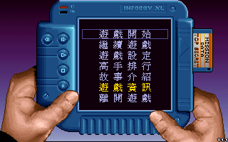
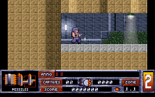

名稱：異形殺手／異形殘殺：萬聖節哈利／異形終結者 (Alien Carnage／Halloween Harry，中文／英文版)
簡介：Interactive Binary Illusions 1993年出品的動作射擊遊戲，由Apogeeo代理發行，
1994年由艾生中文化，並由亞瑟發行 [待補]。


備註：本版為繁中1.1版
保護：無
檔案：carnage.rar = 英文1.0版Alien Carnage
harry11.rar = 英文1.1版Halloween Harry
harry12.rar = 英文1.2版Halloween Harry